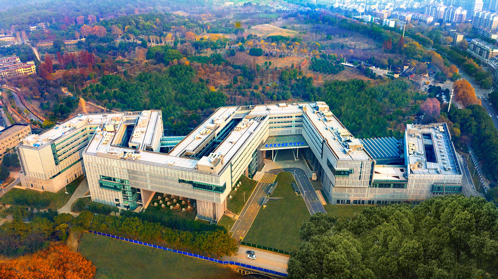

Digital PET Laboratory
Research that makes the invisible visible
A page-opening pattern for broad research areas, campaigns, and institutional storytelling.
Website component reference
A visual index of the distinct layout patterns used across PETLab website main content. Repeated plain-text treatments are intentionally grouped rather than duplicated.
High-level entry points and transition bands.
A page-opening pattern for broad research areas, campaigns, and institutional storytelling.
Use this for a concise institutional proposition before transitioning into detailed white-background content.
Combines page orientation with immediate routes into a small set of major research areas.
Structured narrative sections that combine imagery and explanatory copy.

A calm, legible layout for content where the image and body text have equal importance.

The overlapped panel strengthens hierarchy and works well for a small number of high-value use cases.
Repeated content cards for projects, news, people, and publications.
 Photon Counting CTLightning Detection
Photon Counting CTLightning Detection Neutron Diagnostics
Neutron Diagnostics Underwater Imaging
Underwater ImagingUse for image-led content where a carousel's focus and compact copy support the same story.
Short editorial copy supports fast scanning.
Clear hierarchy keeps the grid useful at a glance.
Use for a curated latest-news section.

Patterns for chronological information, metrics, discovery tools, and response.
Use at the end of high-intent content pages.